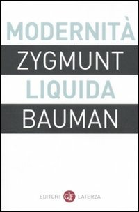
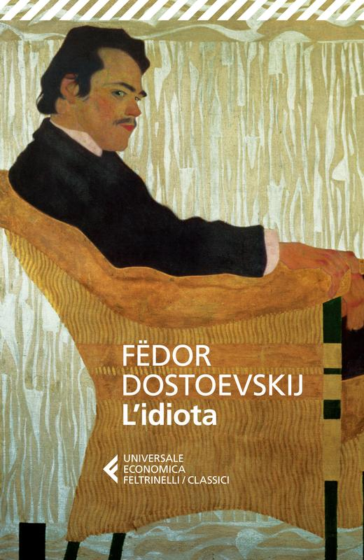
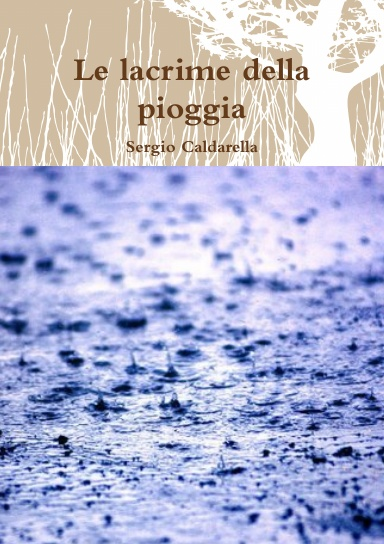

31:27 · 10 OPERE
Il cielo sopra Berlino e l'Europa che ha dimenticato se stessa.
Il filo del discorso
Da Berlino, sotto un cielo che richiama il film di Wim Wenders, Dr Divago raccoglie impressioni sul rapporto fra città e memoria culturale. Cantieri, architetture, nomi di strade e sale dedicate a scrittori o scienziati diventano segni di una continuità che, nella sua lettura, sopravvive spesso soltanto nelle etichette. Einstein, Döblin e Liebknecht introducono il problema di un’Europa che non riconoscerebbe più i propri riferimenti.
Leggi la sintesi completaRiduci la sintesi
La critica al rumore e alla fruizione superficiale dei luoghi si accompagna alla ricerca di interlocutori: il contributo vuole anche ricordare a chi condivide questa inquietudine che non è solo. Spinoza e Kant orientano il discorso verso valore, difficoltà e bellezza; le memorie di Merkel sono oggetto di un giudizio politico del relatore. Nell’ultima parte L’idiota, l’uomo del sottosuolo e Bartleby diventano figure di una resistenza al conformismo. Il richiamo finale a Le lacrime della pioggia affida ai personaggi che salvano i libri l’immagine del compito culturale. La sintesi conserva il carattere personale e polemico del discorso, distinguendolo da un’indagine statistica sulla città o dalla verifica delle singole ricostruzioni storiche.
I libri nel discorso

Modernità liquida
Identificazione probabile
Note sul riferimento
Copertina: Laterza · i Robinson, Letture · 2011 e ristampe
Copertina autentica dell’edizione di riferimento, controllata visivamente. Non identifica l’esemplare letto o citato nel video.
Bauman e la società liquida: rinvio probabile all’opera, titolo non pronunciato letteralmente.

Etica
Note sul riferimento
Copertina: Laterza · Biblioteca Filosofica · 2009 · traduzione di Sergio Landucci
Immagine autentica dell’opera, controllata visivamente; l’edizione di riferimento non è attribuita al filmato.
Spinoza, Etica e massima conclusiva sulle cose preziose, difficili e rare.

Introduzione aritmetica
Identificazione probabile
Note sul riferimento
Frontespizio dell’edizione: Introduction to Arithmetic, traduzione di Martin Luther D’Ooge, studi di Frank Egleston Robbins e Louis Charles Karpinski, Macmillan, 1926, University of Michigan Studies, Humanistic Series XVI, 318 pagine.
Frontespizio autentico della traduzione inglese del 1926, dal volume digitalizzato della University of Michigan. Riproduzione del frontespizio; l’immagine non raffigura una copertina esterna. Titolo, autore e traduttore sono riscontrati anche nei cataloghi; nessuna edizione italiana è attribuita al filmato.
Aritmetica di Nicomaco come antecedente della massima: opera identificabile, derivazione non dimostrata.

Bibbia
Note sul riferimento
Copertina: San Paolo, 2014 · Nuova Versione dai Testi Antichi · edizione di riferimento
Bibbia e alzate gli occhi e guardate; versetto preciso non identificato.

Libertà. Memorie 1954–2021
Note sul riferimento
Copertina: Rizzoli, 26 novembre 2024, 736 pagine, traduzione di Chicca Galli e Roberta Zuppet; ISBN 9788817180559.
Immagine autentica dell’opera, controllata visivamente; l’edizione di riferimento non è attribuita al filmato.
Merkel, Freiheit, Libertà, autobiografia esplicitamente discussa.

Critica del giudizio
Note sul riferimento
Copertina: Bompiani, 2015
Kant, Critica del giudizio e il sublime, titolo esplicito.

L’idiota
Note sul riferimento
Copertina: Feltrinelli, Universale Economica I Classici, catalogo editoriale 28 settembre 2017, 768 pagine, traduzione e cura di Gianlorenzo Pacini; ISBN 9788807901003.
Copertina autentica verificata visivamente, con titolo, autore e marchio Universale Economica Feltrinelli. Il percorso tecnico dell’editore contiene quarta, ma il file effettivo raffigura la copertina anteriore: il contenuto è stato controllato prima dell’uso. Alcuni cataloghi riportano precedenti uscite con lo stesso ISBN; nessuna ristampa è attribuita al filmato.
L’idiota di Dostoevskij e la virtù del protagonista.

Memorie del sottosuolo
Note sul riferimento
Copertina: Theoria · Futuro Anteriore, 2022 · edizione di riferimento
L’uomo del sottosuolo e l’incipit del libro; titolo italiano normalizzato.

Bartleby lo scrivano
Note sul riferimento
Copertina della raccolta: Bompiani · Bartleby lo scrivano e altri racconti · 2018
Copertina della raccolta Bompiani che contiene Bartleby lo scrivano. Non è presentata come copertina di un’edizione autonoma del racconto né come l’esemplare citato nel video.
Bartleby e preferirei di no, personaggio esplicito.

Le lacrime della pioggia
Note sul riferimento
Copertina: Lulu, 16 aprile 2011, paperback, 40 pagine; ISBN 9780557402861.
Immagine autentica dell’opera, controllata visivamente; l’edizione di riferimento non è attribuita al filmato.
Le lacrime della pioggia, testo teatrale dell’autore e due personaggi che salvano i libri.